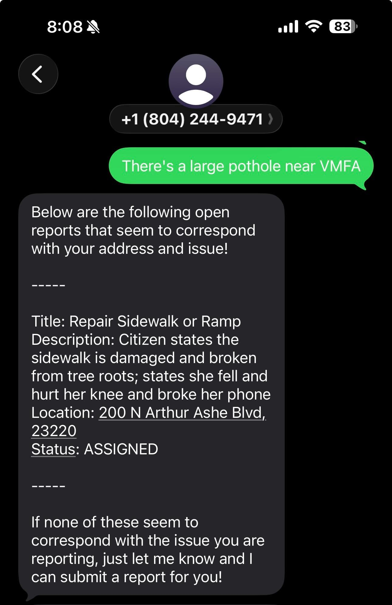

What it Looks Like
A real interaction using live RVA311 data

Example of checking existing issues
Responses are based on live RVA311 data.
To try it, text the number below with a city issue and a location.
804-244-9471
What happens when you text
- You describe what you're seeing and where
- Text311 uses the OpenAI API to understand your request
- Text311 tool checks Richmond's 311 data
-
You get a response with:
- nearby reported issues and status
- or a way to submit a new request
- If you want to submit a request, you can do so right from the message.*
* See scope section for request types covered.
Access
- Works on any phone (no smartphone required)
- No internet or app needed
- No account or login
- Responds in the language you use
What it helps with
- See if an issue has already been reported
- Avoid submitting duplicate requests
- Submit certain new requests (potholes and sidewalks in this prototype)
Data sources
- RVA311 public API (service requests and status)
- Standard geocoding services
This approach works with existing systems rather than requiring a new platform.
Current scope
New request submission currently supports:
- potholes
- sidewalk issues
Other request types are directed to RVA311, similar to the current system.
Additional request types can be easily added given additional time.